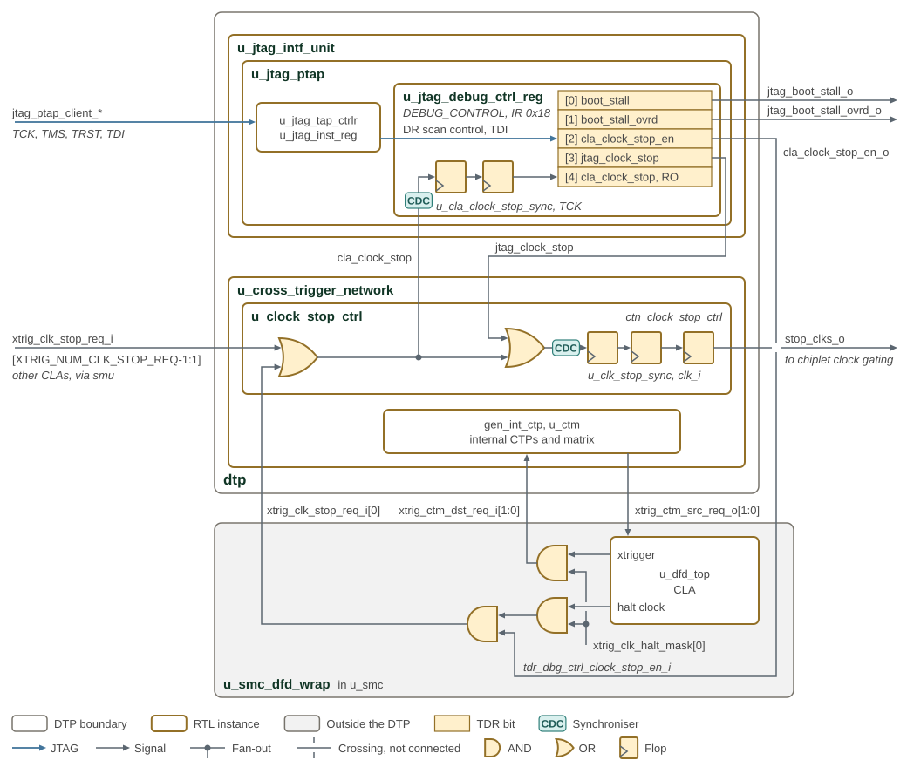
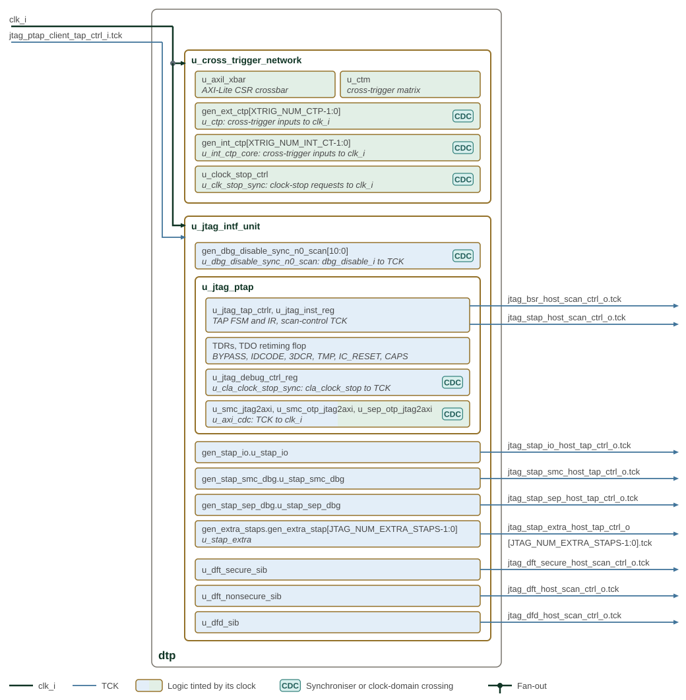
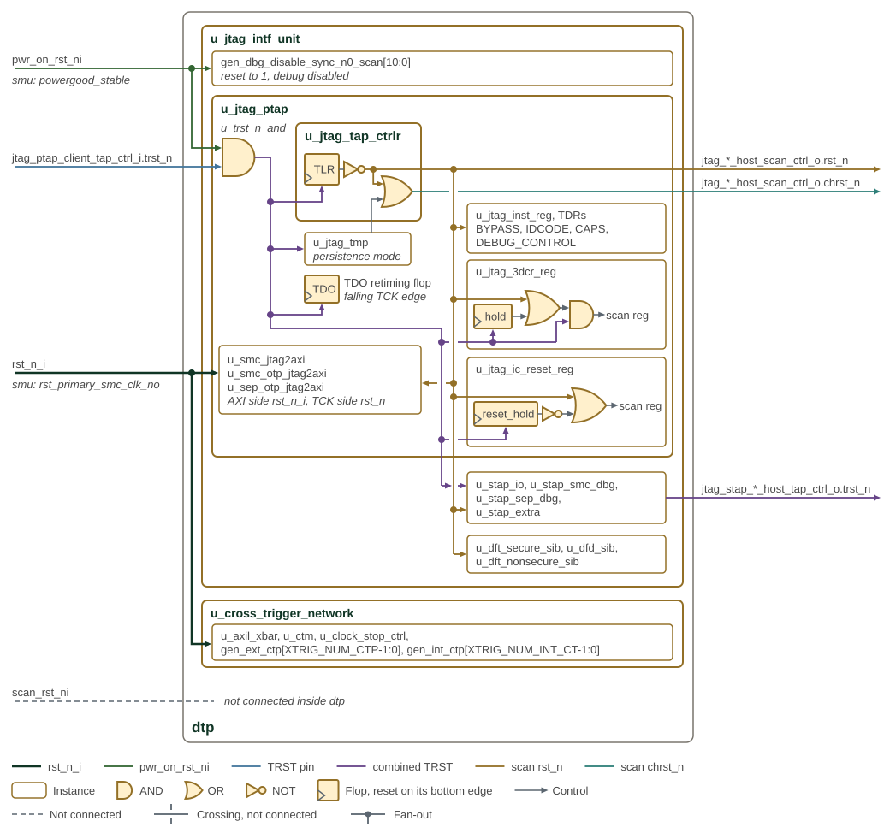

Clock Stop / Reset
The DTP combines JTAG DEBUG_CONTROL and CLA clock-stop request sources into one functional chiplet halt path, while keeping the CLA-only status separate for debugger readback.
1. Halt Path Architecture
DTP JTAG and CLA clock-stop aggregation shows how JTAG and CLA requests contribute to the chiplet
halt path, with the DTP as the SMU instantiates it. The DEBUG_CONTROL TDR is drawn
as its five bits, with bit 0 nearest TDO. The grey box below the DTP is the part of
the SMC DFD block (smc_dfd_wrap) that produces the SMC’s clock-stop request and
exchanges cross-triggers with the DTP. Gate and flop symbols draw the logic of the
path, and CDC badges mark the two-flop synchronizers where a signal enters the TCK or
clk_i domain.

Three distinct signals participate in clock stop:
jtag_clock_stop(JTAG DEBUG_CONTROL bit 3)-
Written through the DEBUG_CONTROL TDR (IR 0x18) in the primary TAP and routed to the CTN clock-stop controller. OR-combined with CLA requests to form the registered
stop_clks_ooutput that connects to chiplet functional clock gating. The bit resets on TRST, on power-on reset and whenever the TAP enters Test-Logic-Reset. cla_clock_stop_en(JTAG DEBUG_CONTROL bit 2)-
Exported at the DTP top level as
cla_clock_stop_en_o. It is not part of thestop_clks_oaggregation inside the CTN. In the SMU it drives the SMC DFD’stdr_dbg_ctrl_clock_stop_en_i, which gates the SMC CLA’s clock-stop request onxtrig_clk_stop_req_i[0], so it decides whether the SMC CLA can halt the chiplet. - CLA clock-stop indication
-
The CTN OR-reduces
xtrig_clk_stop_req_i(CLA sources only, notjtag_clock_stop) to form thecla_clock_stopreadback status. The OR is combinational, so the DEBUG_CONTROL TDR passes it through a two-flop TCK synchronizer before bit 4 captures it in Capture-DR. A debugger reads it there to observe whether any CLA clock-stop source is active.
2. Signal Flow
-
The JTAG Interface Unit captures DEBUG_CONTROL bits in the TCK domain. The
jtag_clock_stopbit is routed to the CTN clock-stop controller;cla_clock_stop_enis exported at the DTP boundary. -
The CTN OR-reduces
xtrig_clk_stop_req_ito producecla_clock_stopstatus, then OR-combines that aggregate withjtag_clock_stop. The result passes a two-flopclk_isynchronizer and an output flop to producestop_clks_o, which follows the requests threeclk_icycles later and is low whilerst_n_iis asserted. -
The
cla_clock_stopstatus is fed back into the DEBUG_CONTROL readback path so a debugger can observe CLA clock-stop source activity independently of its own direct-stop assertion.
This architecture keeps CLA observability distinct from the JTAG direct-stop
path, while either source can assert the functional chiplet halt through
stop_clks_o.
In the SMU, lane 0 of the XTRIG_NUM_CLK_STOP_REQ xtrig_clk_stop_req_i lanes
carries the SMC DFD’s clocks-stopped output. That output is the CLA halt-clock
action, masked by bit 0 of xtrig_clk_halt_mask in the SMC DFX CSRs and ANDed
with cla_clock_stop_en_o; it also raises an SMC CPU interrupt. The remaining lanes,
xtrig_clk_stop_req_i[XTRIG_NUM_CLK_STOP_REQ-1:1], come from the SMU’s own
xtrig_clk_stop_req_i ports. The same mask gates the CLA cross-trigger outputs,
which reach the cross-trigger matrix through internal lanes 1 and 0
(xtrig_ctm_dst_req_i[1:0]); xtrig_ctm_src_req_o[1:0] returns to the CLA. The
SMU runs both SMC lanes in pulse-synchronization mode and ties their
acknowledges low, and exports internal lanes 9 to 2.
For the CTN clock-stop controller implementation and the xtrig_clk_stop_req_i
input indexing, see
Cross-Trigger Network.
3. Clock Distribution
DTP system-clock and JTAG-clock distribution shows which DTP blocks use the system clock and which use TCK.
The DTP has two clocks and no clock gates. clk_i, the system clock (clk_smu_i
in the SMU), clocks the whole cross-trigger network and the AXI side of the three
JTAG2AXI bridges. TCK, from jtag_ptap_client_tap_ctrl_i.tck, clocks the rest of
the JTAG interface unit. Each block is tinted by the clock that runs it, and each
clock has one arrow into each hierarchy it reaches. CDC badges mark the blocks that
synchronize a signal from another domain: the cross-trigger port input
synchronizers, the clock-stop controller, the dbg_disable_i synchronizers, the
DEBUG_CONTROL cla_clock_stop synchronizer and the JTAG2AXI bridges' u_axi_cdc.
TCK leaves the DTP unchanged on the host TAP control of every STAP and on the host
scan control of the boundary-scan, extended STAP, DFT and DFD ports.

4. Reset Distribution
DTP system and JTAG reset distribution shows the reset distribution for DTP system logic and the JTAG scan paths. Each reset has its own colour, and the input names below the DTP ports are the SMU nets that drive them. Gate and flop symbols show where resets are combined, and a reset ends on the bottom edge of the flop it resets.
-
rst_n_i(rst_primary_smc_clk_noin the SMU) resets the cross-trigger network and the AXI side of the JTAG2AXI bridges. -
pwr_on_rst_ni(powergood_stablein the SMU) sets thedbg_disable_isynchronizers to 1, disabling every debug path until the lifecycle value arrives.u_trst_n_andANDs it with the TRST pin to form the combined TRST. -
The combined TRST resets the TAP controller, including its Test-Logic-Reset flop, the TMP controller and the TDO retiming flop. It also resets the hold flops of the 3DCR and IC_RESET TDRs, the 3DCR scan register and the STAPs, and leaves unchanged on the host TAP control of every STAP.
-
The TAP controller derives the scan reset
rst_n, which is low in Test-Logic-Reset, and the scan channel resetchrst_n, which the TMP persistence mode holds released through Test-Logic-Reset.rst_nresets the instruction register, most TDRs, the TCK side of the JTAG2AXI bridges, the STAPs and the SIBs. The 3DCR TDR takes it only while its hold bit is clear, and the IC_RESET TDR only while itsreset_holdbit is set.chrst_nis not used inside the DTP; both leave on the host scan control of the boundary-scan, extended STAP, DFT and DFD ports.
The two-flop cla_clock_stop synchronizer in the DEBUG_CONTROL TDR has no reset.
test_en_i drives the test mode of the cross-trigger network and the JTAG2AXI
bridges. scan_rst_ni is not connected inside the DTP, which has no reset
synchronizer, so rst_n_i must arrive scan-controlled. A STAP whose enable
parameter is 0 drives its host TRST low.
